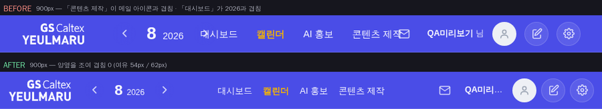
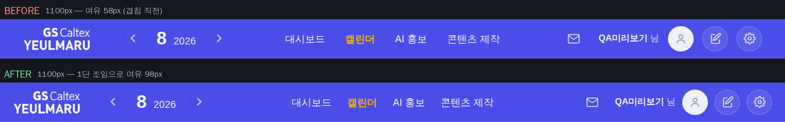
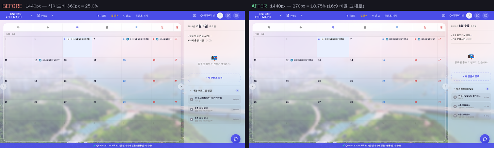
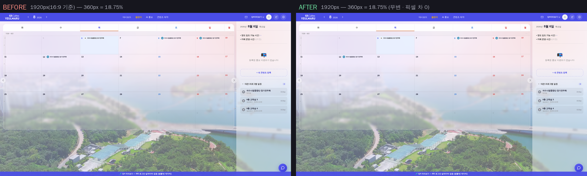

지시(운영자 260806): 「지금 조금 상단 메뉴가 겹치는 부분이 있는데 그 부분좀 해결해줄래?」 · 「좁아질때 항상 그 넓을때랑 같다고 가정해서 사이드바의 비율이 유지되었으면 — 예를 들어 16대 9일때 캘린더랑 사이드바의 너비 비율, 임의로 좁아질때도 사이드바가 그 비율에 맞춰서 줄어들게」 · 「사이드바가 줄어들게 되면 프로그램 타이틀이 줄어들도록, 일정 더 줄어들면 아예 사이드바는 출력 없애는거로(모바일)」
화면 = QA 진입로(?qa=admin) 목데이터 · 실API·실데이터·PII 미접촉 · 캘린더 모드 + 오늘 날짜 패널 상주 상태.
좌 = 전(origin/main c5efbd6) / 우 = 후. 같은 스크립트·같은 순서로 찍어 조건을 맞췄다(tools/scratch/probe_nav_sidebar.mjs).
중앙 대메뉴(.nav-center)는 뷰포트 정중앙 절대배치(운영자 260723 「메뉴 중앙정렬」)라 흐름 밖에 있다 =
좌(로고+월네비)·우(아이콘 묶음)가 자리를 넓혀도 밀어내지 못하고 그냥 겹친다.
구판은 조임 단계가 하나도 없이 768px에서 갑자기 햄버거로 접혀, 그 사이 구간(≈1015 → 769)이 통째로 겹침 구역이었다.


기준 = 16:9 정본 화면 1920×1080에서의 현재 폭 360px = 18.75%(캘린더:사이드바 ≈ 13:3).
구판은 width:360px 고정이라 창이 좁아질수록 사이드바 몫만 커졌고, 그만큼 캘린더가 먹혀 마지막 열(일/월)이 잘렸다.

기준 화면에서는 아무것도 바뀌지 않는다. 실측 = 두 스샷 픽셀 차 526px, 전부 우하단 챗봇 FAB 애니메이션 프레임(bbox 1826,986–1906,1067) = 레이아웃 차 0.

2단 조임이 겹침 없이 버티는 하한(계산 ≈824px)보다 위인 880px에서 기존 정본(햄버거 시트)으로 접는다. ≤768px은 종전 모바일 정본 그대로 = 사이드바(옆 열) 출력 없음, 패널은 폭 100vw 하단 시트로 갈아끼워진다.
겹침 = 좌(또는 우) 덩이와 중앙 메뉴의 침범 px(음수 = 여유). 비율 = 사이드바 / 창 폭.
| 창 폭 | 전 · 겹침(좌/우) | 후 · 겹침(좌/우) | 전 · 사이드바 | 후 · 사이드바 | 전 · 비율 | 후 · 비율 |
|---|---|---|---|---|---|---|
| 1920 | −468 / −479 | −468 / −479 | 360 | 360 | 18.75% | 18.75% |
| 1600 | −308 / −319 | −308 / −319 | 360 | 300 | 22.5% | 18.75% |
| 1440 | −228 / −239 | −228 / −239 | 360 | 270 | 25.0% | 18.75% |
| 1280 | −148 / −159 | −148 / −159 | 360 | 240 | 28.1% | 18.75% |
| 1120 | −108 / −119 | −108 / −117 | 360 | 210 | 32.1% | 18.75% |
| 1067 | −81 / −90 | −81 / −90 | 360 | 200 | 33.7% | 18.75% |
| 1024 | −20 / −31 | −60 / −69 | 360 | 200 | 35.2% | 19.5% |
| 960 | +12 / +0.7 | −84 / −92 | 360 | 200 | 37.5% | 20.8% |
| 900 | +42 / +31 | −54 / −62 | 360 | 200 | 40.0% | 22.2% |
| 881 | +47 / +36 | −44 / −53 | 360 | 200 | 40.9% | 22.7% |
| 880 | +52 / +41 | 접힘(햄버거) | 360 | 200 | 40.9% | 22.7% |
| 769 | +108 / +96 | 접힘(햄버거) | 360 | 200 | 46.8% | 26.0% |
| ≤768 | 모바일 시트 | 모바일 시트 | 100vw | 100vw | 옆 열 없음 | 옆 열 없음 |
식 한 줄 = 글자 = 기준값 × (0.8 + 0.2×(pw−200)/160). 통(--pw)보다 천천히 준다 —
통과 1:1로 줄이면 200px 폭에서 13px 타이틀이 7px이 돼 못 읽는다.
| 창 폭 | 사이드바 폭 | 날짜 머리줄(기준 20) | 장도·카페(13) | 섹션 제목(13) | 프로그램 타이틀(13) | 장소(10) | D-day(11) |
|---|---|---|---|---|---|---|---|
| 1920 | 360 | 20.0 | 13.0 | 13.0 | 13.0 | 10.0 | 11.0 |
| 1600 | 300 | 18.5 | 12.0 | 12.0 | 12.0 | 9.3 | 10.2 |
| 1280 | 240 | 17.0 | 11.1 | 11.1 | 11.1 | 8.5 | 9.4 |
| ≤1067 | 200 | 16.0 | 10.4 | 10.4 | 10.4 | 8.0 | 8.8 |
| ≤768 | 100vw 시트 | 20.0 | 13.0 | 13.0 | 13.0 | 10.0 | 11.0 |
| 축 | 처리 |
|---|---|
| 색 | 신규 raw hex 0 · 새 토큰 0 · 새 :root 0 (check_design 1545/1545 · 2/0 블록) |
| 형태 | 새 컴포넌트 0 — 접힘은 이미 있던 햄버거 시트 정본을 폭만 올려 재사용(규칙 내용 무수정 이동) |
| 배치 결정 | 「메뉴 = 뷰포트 정중앙」(운영자 260723) · 「사이드바 항상 펼쳐지게」(운영자 260731) · 「우측 360px」 상한 — 셋 다 불변 |
| 값 이원화 | 해소 — _panelRailReflow가 갖고 있던 '360px' 리터럴을 지우고 CSS가 정한 실폭을 읽는다 |
| 인라인 재타이핑 | 해소 — 프로그램 행 활자를 세 자리가 각각 인라인으로 적던 것을 정본 CSS .pp-nm/.pp-vn/.pp-dd 한 벌로(색만 인라인 유지) |
| 잰크 | 레이아웃 유발 transition 추가 0 (15/15 유지) |
npm run check 전건 rc=0(check_design · check_refs · modal_head 61건 · exchart · parity 56종 증가 0 · bizchart · wizard · bkchat · build_annual_yr)
+ smoke:layout 1920/1440 PASS + smoke:modalhead 36건 PASS + check_wide_threshold · check_biz_list · check_wiring · check_break_rule PASS.
기능 실측 = 폭 1440→700 스윕 전 구간 캘린더 오른변 ↔ 사이드바 왼변 틈 0.0px · 가로 넘침 0 · 모드 왕복(캘린더↔대시보드) 무회귀 · 햄버거 열림/닫힘 · pageerror 0.